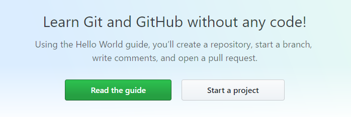
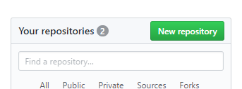
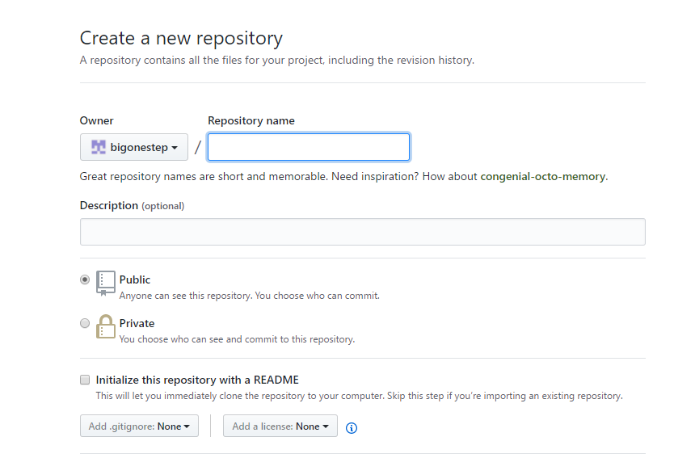

利用GitHub为hexo源文件备份
用hexo搭建博客非常方便快捷，但是搭建起来之后还要做很多的配置，比如主题、博客信息、一些动态效果、小优化等等,十分麻烦，最重要的是自己亲亲苦苦写的博文。所以，一旦不小心彻底删除了一些配置文件，或者换电脑等等情况，则之前所建的博客将不发继续更新。因为每次提交到GitHub的文件只有通过hexo生成的网页文件。所以这里我将介绍几种备份hexo源文件的方法，使得不管出现什么情况都能让你快速还原。
这里由三种方法实现备份，推荐使用第三种：
- 利用U盘
- 利用网盘
- github
利用U盘
这个方法不用我过多介绍，插上U盘把源代码拷贝到U盘上。这种方法最不推荐，因为U盘在使用过程中很容易丢失文件，另外U盘也很容易损伤中毒。
利用网盘
把hexo源文件上传到网盘上，比如百度网盘等等，但是考虑到国内网盘的速度以及稳定性，所以也不推荐。
github
这种方法是最推荐的，既然你已利用hexo+github建立了自己博客，github账户一定会有的，下面就教你利用github进行源文件备份。
首先建立文件仓（repository），取名随意，建议取名hexo。
方法有两种：
新建文件仓
- 登陆你的github，在上面点击，New repository 或者点击Start a
projet，然后建立repository。



直接利用git，在hexo所在的文件夹输入：
git initgit remote add origin git@github.com:yourgithub/hexo.gitgit pull origin master完成之后hexo文件夹里会有一个.gitignore文件，用notepad++打开，里面默认会有，
- .DS_Store
- Thumbs.db
- db.json
- *.log
- public/
- .deploy*/
- node_modules
这个文件是告诉git上传文件时忽略那些文件，或者文件夹。所以我们把node_modules去掉，保存。
若没有.gitignore新建一个。注意用一般方法是新建不了的，可以百度一下新建方法。
提交本地代码
执行下面代码，完成hexo源代码在本地提交。
12git add .git commit -m "添加hexo源码文件作为备份"
完成推送
执行以下命令，将本地的仓库文件推送到Github。
git push origin master
到目前为止，hexo源代码上传工作完成啦。
下载到本地
现在换成任何一台电脑，只要打开git输入一下代码，即可在源代码下载到本地。
git clone git@github.com:yourgithub/hexo.git
更新代码
如果更新hexo的备份只需要输入下面的代码。
123git add .git commit -m "更新hexo源文件"git push origin master当远程仓库有更新时，执行以下命令，即可同步hexo源文件到本地。
git pull origin master
这样就可以实现，hexo源代码的更新与通不了。